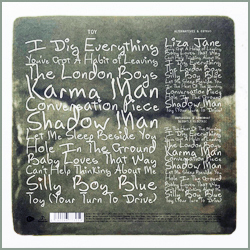
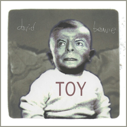

Heavily bootlegged over the years, Toy is an album recorded in 2000, right between 'hours ...' and Heathen. The concept was simple: Bowie took his touring band into the studio to revisit a bunch of songs he wrote and recorded prior to becoming a superstar. Although Shadow Man comes from the Ziggy Stardust sessions, most of the songs date from the days before Space Oddity, so they're grounded in British rock & roll and mod R&B - a far cry from both his glam rock of the 1970s and the electronic-inflected art rock of the 1990s. Hearing Bowie apply the overly polished aesthetics of 'hours ...' to swinging, moddish material is odd but appealing. He and his band have fun with the material, diminishing some of the stilted tweeness of the originals and revealing the nice compositional bones underneath. It's a record out of time, with the songs clearly from the swinging '60s and the production being very much a product of the slick Y2K era, yet that's also its charm: it's Bowie revisiting his past from a particular perspective that is as of its time as the original songs. Toy is a slight record but it was given a weighty official release in 2022 after first being unveiled as part of the 2021 box Brilliant Adventure.
Along with the proper album, there's a disc of alternative mixes and extras - here, the main attraction is a version of Liza Jane, his first single - then a disc of Unplugged & Somewhat Slightly Electric mixes. All the alternate mixes, including those unplugged versions on the third, are only slightly different than the original mixes, making the deluxe set somewhat monotonous.
I DIG EVERYTHING
YOU'VE GOT A HABIT OF LEAVING
THE LONDON BOYS
KARMA MAN
CONVERSATION PIECE
SHADOW MAN
LET ME SLEEP BESIDE YOU
HOLE IN THE GROUND
BABY LOVES THAT WAY
CAN'T HELP THINKING ABOUT ME
SILLY BOY BLUE
TOY (YOUR TURN TO DRIVE)